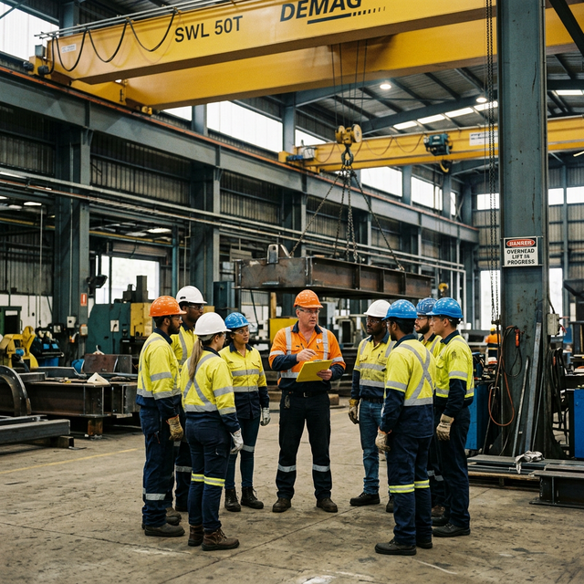
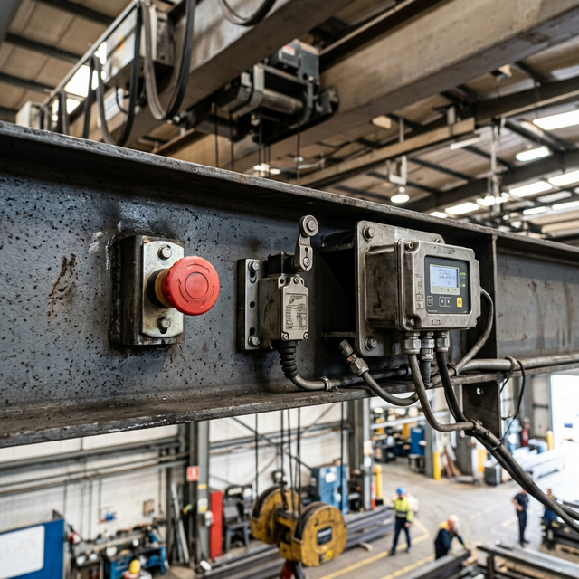

Overhead Crane Safety Protocols: Building a Zero-Incident Lifting Environment
Overhead cranes are among the most powerful — and potentially dangerous — equipment in industrial environments. Globally, crane-related incidents account for a significant proportion of workplace fatalities and serious injuries across manufacturing, construction, and logistics sectors. In South Africa alone, the Department of Employment and Labour records hundreds of lifting-related incidents annually, many of which result in permanent disability or death.
The sobering reality is that the vast majority of crane incidents are preventable. They stem not from equipment limitations, but from systemic failures in safety management: inadequate training, informal shortcuts, poor communication, and the absence of structured safety programmes. Building a zero-incident lifting environment requires more than safety signage and personal protective equipment — it demands a systematic, multi-layered approach to risk management.
Understanding Overhead Crane Risk Categories
Effective safety management begins with understanding the distinct categories of risk that overhead cranes present. Each category requires different mitigation strategies:
- Mechanical failure: Structural fatigue, wire rope deterioration, brake failure, and bearing collapse. These risks are mitigated through structured maintenance programmes and regular inspections.
- Load instability: Improper rigging, incorrect sling selection, shifting loads, and centre-of-gravity miscalculation. These failures often result in dropped loads — the single most dangerous crane incident category.
- Operator error: Insufficient training, fatigue, distraction, and complacency. Human factors account for an estimated 70% of all crane incidents.
- Environmental factors: Wind loading on outdoor cranes, extreme temperatures affecting material properties, poor visibility, and floor surface conditions affecting ground personnel.
- Communication breakdown: Misunderstood signals between operators, riggers, and signal persons. This risk escalates dramatically in noisy industrial environments with multiple concurrent operations.
A root cause analysis approach reveals that most incidents involve failures in multiple categories simultaneously. A dropped load, for example, might result from improper rigging (load instability), combined with an untrained rigger (operator error) who failed to communicate concerns (communication breakdown). Effective safety systems address all categories comprehensively.
Safety is not a checklist to be completed — it is a culture to be built. Every lift is an opportunity to demonstrate that we value human life above production targets.
Zentro Projects Safety Team
The 6-Layer Crane Safety System
Layer 1: Engineering Controls
Engineering controls are the first and most effective line of defence because they eliminate or reduce hazards without relying on human behaviour. Critical engineering controls for overhead cranes include:
- Load limiters and overload protection: Electronic systems that prevent the crane from lifting loads exceeding its rated capacity, automatically disengaging the hoist when the limit is reached.
- Emergency stop systems: Clearly marked, easily accessible emergency stop buttons on pendants, remote controls, and at strategic floor-level positions.
- Limit switches: Upper and lower hoist limits, bridge and trolley travel limits, and anti-two-block devices that prevent the hook block from contacting the sheave assembly.
- Anti-collision systems: Radar or laser-based systems on multi-crane runways that automatically slow or stop cranes approaching each other.
- Physical guarding: Walkway barriers, end stops, bridge bumpers, and trolley guards that prevent personnel contact with moving components.
Layer 2: Administrative Controls
Where engineering controls cannot fully eliminate risk, administrative controls establish the rules and procedures that govern safe crane operations:
- Standard Operating Procedures (SOPs): Written, site-specific procedures for every type of lift performed, from routine material handling to complex tandem lifts.
- Lift plans: Detailed plans for non-routine or critical lifts that document load weight, rigging configuration, lift path, exclusion zones, and communication protocols.
- Permit-to-work systems: Formal authorisation processes for lifts over occupied areas, near electrical lines, or involving multiple cranes.
- Hazard identification processes: Systematic methods for identifying and documenting hazards before work begins, including job safety analyses and risk assessments.


Layer 3: Operator Competency and Certification
No safety system can compensate for an incompetent operator. Comprehensive operator competency programmes include:
- Formal training programmes: Structured courses covering crane theory, load dynamics, rigging principles, safety regulations, and practical operation under supervision.
- Refresher training: Annual refresher sessions that reinforce critical safety concepts and update operators on new procedures, equipment modifications, or regulatory changes.
- Practical and theoretical evaluation: Dual-track assessment ensuring operators understand both the theory behind safe lifting and can demonstrate competence in real-world scenarios.
- Supervisory sign-off: Formal competency verification by qualified supervisors before operators are authorised to work independently.
Layer 4: Pre-Lift Risk Assessment
Every lift — regardless of how routine it appears — should be preceded by a brief but structured risk assessment. Key elements include:
- Load weight verification against the crane's rated capacity at the working radius
- Centre of gravity assessment to determine attachment point placement
- Sling and rigging hardware selection appropriate for the load weight, shape, and material
- Environmental hazard check: wind conditions, overhead obstructions, floor hazards, nearby personnel
- Exclusion zone establishment: defining and communicating the area beneath and around the lift path where no personnel may enter
Layer 5: Communication Protocols
Clear, unambiguous communication is essential during every lifting operation. Effective communication systems include:
- Standard hand signals: Internationally recognised hand signals for hoist, lower, travel, stop, and emergency stop operations.
- Radio communication: Two-way radio protocols for operations where direct line-of-sight is not possible, with clear channel discipline and confirmation procedures.
- Signal person authority: Designated, trained signal persons with explicitly defined authority over crane movements during rigging and positioning operations.
- Stop-work authority: Every worker on site — regardless of position or seniority — has the authority and obligation to stop a lifting operation if they identify an unsafe condition.
Layer 6: Incident Response and Near-Miss Reporting
A mature safety programme treats every incident and near-miss as a learning opportunity:
- Non-punitive reporting culture: Workers must feel safe reporting near-misses and unsafe conditions without fear of reprisal. Punitive reporting cultures suppress the very information needed to prevent serious incidents.
- Root cause investigation: Moving beyond superficial "operator error" conclusions to identify the systemic factors — inadequate training, unclear procedures, equipment deficiency — that created the conditions for the incident.
- Continuous improvement loop: Investigation findings must drive specific, measurable corrective actions that are tracked to completion and verified for effectiveness.
Common Safety Failures in Industrial Lifting
Understanding why safety systems fail is as important as understanding what they should contain. The most common failure patterns include:
- Overconfidence: Experienced operators who skip safety steps because "I've done this a thousand times." Familiarity breeds complacency, and complacency is the precursor to incidents.
- Informal shortcuts: Time pressure leading to bypassed procedures: skipping pre-lift inspections, using damaged rigging "just this once," or operating without a signal person to save time.
- Untrained temporary workers: Contract or temporary workers deployed to assist with lifting operations without adequate training or orientation to site-specific procedures.
- Lack of supervision: Insufficient oversight of lifting operations, particularly during overtime, night shifts, or periods of high production pressure when safety may be de-prioritised.
Building a Safety-First Culture Around Cranes
Technical safety systems are necessary but insufficient. A genuine safety culture — where safe behaviour is the natural default rather than an imposed requirement — requires sustained leadership commitment:
- Visible leadership involvement: Managers and supervisors who actively participate in safety walks, attend toolbox talks, and visibly prioritise safety over production when conflicts arise.
- Regular toolbox talks: Short, focused safety discussions at the start of shifts, addressing specific topics relevant to the day's planned operations.
- Safety KPIs: Measuring and reporting on leading indicators (near-miss reports, safety observations, training completion) rather than only lagging indicators (incident rates).
- Recognition systems: Acknowledging and rewarding safe behaviour, not just production achievement. When workers see that management values safe work practices, behaviours shift permanently.
Frequently Asked Questions
What qualifications does an overhead crane operator need?
Crane operators require formal training from accredited providers, practical competency
assessment, and site-specific orientation. In South Africa, operators should hold a
valid operator certificate and be formally authorised by the employer for specific crane
types.
How often should crane safety training be refreshed?
Annual refresher training is recommended as a minimum. Additional training should be
provided when new equipment is introduced, after incidents or near-misses, or when
operators are assigned to different crane types or operating environments.
Who has stop-work authority during a crane operation?
Every person on site should have stop-work authority. Any worker who identifies an
unsafe condition has both the right and the obligation to halt the operation until the
hazard is addressed.
What should a pre-lift risk assessment include?
At minimum: load weight verification, sling/rigging selection verification,
environmental hazard check, exclusion zone establishment, communication protocol
confirmation, and verification that all personnel involved understand their roles.
Partner with Zentro Projects for Crane Safety Excellence
At Zentro Projects, we bring decades of experience to every safety engagement. Whether you need comprehensive crane operator training programmes, independent safety audits of your lifting operations, or assistance developing site-specific SOPs and lift plans, our team provides the expertise to build a genuinely zero-incident lifting environment.
We also offer load testing services, equipment inspections, and ongoing maintenance programmes that ensure your engineering controls remain effective. Contact us today to discuss how we can support your safety objectives.